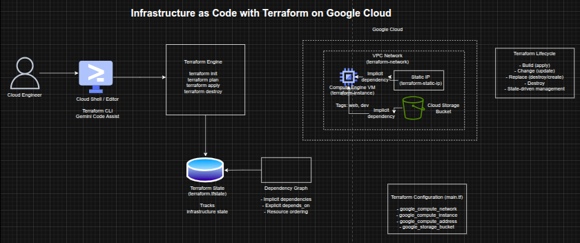

Infrastructure as Code with Terraform on Google Cloud
Infrastructure as Code with Terraform on Google Cloud
Timeline: December 2025
Role: Cloud Engineer / Infrastructure Engineer
Skills: Terraform, Google Cloud, Compute Engine, VPC, Infrastructure as Code (IaC), Resource Dependencies, Terraform State, Provisioners
Project Summary
This project focused on implementing Infrastructure as Code (IaC) using Terraform to provision, modify, and destroy infrastructure on Google Cloud. The work involved creating a VPC network, provisioning a virtual machine, assigning a static IP, defining resource dependencies, and using provisioners for post-deployment automation.
The implementation demonstrated how Terraform enables repeatable, version-controlled infrastructure deployment, including safe change management, dependency resolution, and lifecycle control.
Objectives
- Build infrastructure using Terraform configuration files
- Modify infrastructure using incremental changes
- Destroy infrastructure using Terraform lifecycle commands
- Create implicit and explicit resource dependencies
- Assign static IP addresses to compute instances
- Use provisioners for post-deployment automation
- Understand Terraform state and execution planning
Architecture Overview
The architecture consisted of:
- Cloud Shell / Editor as the Terraform execution environment
- A Terraform configuration file (
main.tf) defining multiple resources - The Terraform engine executing lifecycle commands (
init,plan,apply,destroy) - A Google Cloud VPC network provisioned via Terraform
- A Compute Engine VM instance deployed into the VPC
- A static IP address attached to the VM
- A Cloud Storage bucket used to demonstrate explicit dependencies
- A Terraform state file (
terraform.tfstate) tracking infrastructure state - A provisioner (local-exec) performing post-deployment automation

Implementation & Highlights
1. Terraform Configuration and Initialization
- Created a
main.tfconfiguration file defining infrastructure resources - Configured the Google provider and project settings
- Initialized Terraform using
terraform init
2. Infrastructure Provisioning
- Created a VPC network using Terraform
- Applied the configuration using
terraform apply - Verified provisioning in Google Cloud
3. Compute Engine Deployment
- Added a Compute Engine VM instance
- Connected it to the VPC network
- Enabled external connectivity
4. Infrastructure Updates
- Added tags (
web,dev) to the VM - Modified boot disk image
- Observed:
- in-place updates (
~) - resource replacement (
-/+)
- in-place updates (
5. Resource Dependencies
- Created a static IP resource
- Attached it to the VM using interpolation
- Implemented:
- implicit dependencies
- explicit dependencies (
depends_on)
6. Provisioners
- Added a local-exec provisioner
- Captured VM IP address into a file
- Demonstrated post-deployment automation
7. Infrastructure Destruction
- Used
terraform destroyto remove resources - Verified dependency-aware destruction order
Design Decisions
- Used Terraform for declarative infrastructure provisioning
- Structured configuration to demonstrate lifecycle and dependencies
- Leveraged interpolation and depends_on for dependency control
- Used provisioners for automation
- Maintained state tracking for consistency and repeatability
Results & Impact
- Successfully provisioned and managed infrastructure using Terraform
- Demonstrated:
- lifecycle management
- dependency resolution
- safe infrastructure changes
- Built a strong foundation for advanced IaC implementations
- Reinforced best practices for cloud automation and DevOps workflows
Tools & Technologies Used
- Terraform – Infrastructure as Code
- Google Cloud – Cloud platform
- Compute Engine – VM provisioning
- VPC Network – Networking
- Cloud Storage – Dependency demonstration
- Cloud Shell – Execution environment
Outcome
This project demonstrates the ability to manage infrastructure lifecycle using Terraform, including provisioning, modification, dependency management, and destruction. It highlights practical skills in Infrastructure as Code, automation, and cloud resource orchestration, forming a strong foundation for advanced DevOps and platform engineering roles.